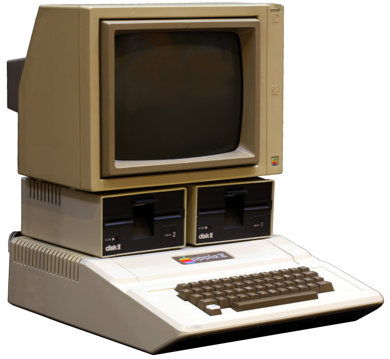
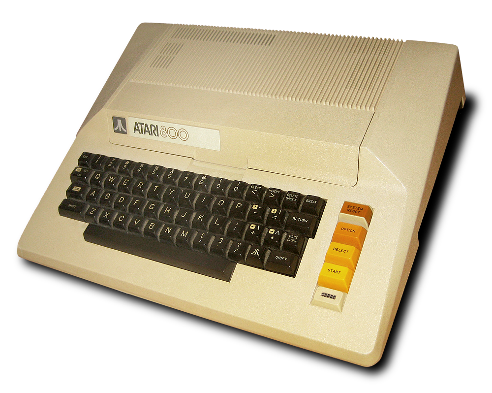
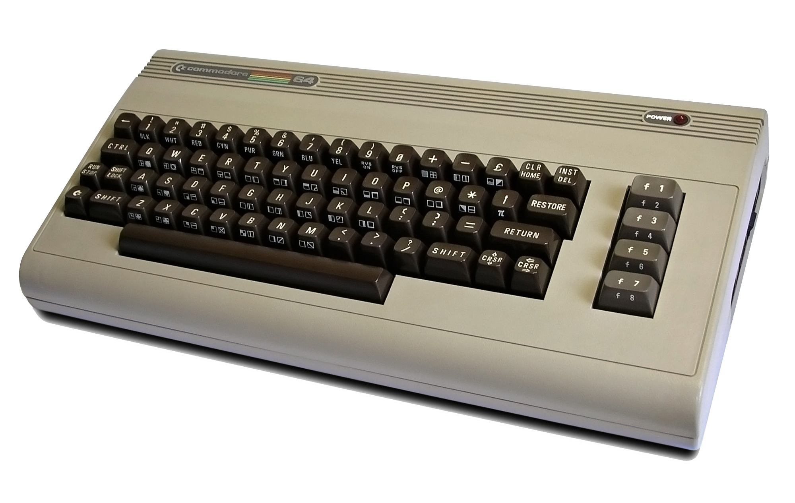

Videogame Craking: Breaking
With the development of software and videogame started also to spread the so called "breaking", the modification of software to unlock blocked or disabled content and especially copy protection features.
History of craker: how it begins.
The art of cracking videogames started when the first software copy protection was implemented in Apple's II, Atari's and Commodore 64's computer to stop the unauthorized copy of these softwares that in that period begin to grow more and more.
Apple II
On the Apple II, the OS directly controlled both step motors that moved the floppy drive and also straight interpreted the raw data called nibbles: in this way complex disk-based software copy protection could be implemented. Since the standard DOS wasn't able to do all this function, all of them weren't able to read protected floppy disk. For this reason, special programs as Locksmith and Copy II plus were developed: using a reference library of known protection methods, those programs could in some case duplicate the disk. One of the technique used by crackers to break the copy protection was to run a program that simulates the normal CPU operation, providing some extra function to the cracker such as the possibility to single-step through each processor instruction and to check the CPU registers and modified memory spaces as the simulation runs.
Atari 8 bit
In Atari 8-bit computers, the copy protection was made thought "bad sectors", a sector on the disk intentionally unreadable by the disk drive. The software, while the program was loading, started to check all the sector and if an error code was not returned when accessing to a bad sector he would have stop working. To be able to crack this system crackers used special copy programs to copy and remember every single bad sector. The user could have been able then to use an application to read a single sector and display the drive RPM and afterwards with the top disk removed the cracker with a small screwdriver should have slowed the drive RPM below a certain point. At this point, the application can write "bad sector" where needed. Finally, the disk drive RPM can be speeded up, and the cracked copy is finished.
Commodore 64
On the Commodore 64, several methods were used to protect software. For software distributed on ROM cartridges, subroutines were included which attempted to write over the program code. If the software was on the ROM, nothing would happen, but if the software had been moved to RAM, the software would be disabled. Because of the operation of Commodore floppy drives, one writes protection scheme would cause the floppy drive head to bang against the end of its rail, which could cause the drive head to become misaligned. In some cases, cracked versions of software were desirable to avoid this result. A misaligned drive head was rare, usually fixing itself by smashing against the rail stops. Another brutal protection scheme was grinding from track 1 to 40 and back a few times.
What about crackers and videogames?
In the period of time between 1980 and 1990, videogames were sold on cassette and floppy and most of the time they also had a protection that asked the user to looking for specific information in the package or in the manual. Moreover copy protection required these information everytime the game was executed. Sometimes companies put the protection at a certain point of the game so people can try it, gaining experience and this could lead the player to buy the game.
Creativity and imagination land the programmers to implement in their software several copy protection methods: for example The Secret of Monkey Island offered one of the most imaginative protection keys: a rotating wheel with halves of pirate's faces,Zork games such as Beyond Zork and Zork Zero came with feelies (extra content included with the boxed versions) which contained information vital to the completion of the game. Moreover in the early beginning, games were offered on a cassette tape. Because games in that period were coded by few or just one person, for crackers copying one of this cassette was so simple due to the non implementation of security codes thought techniques as the use of win-deck tape recorder.
External Links
- [Visited on 06/11/2014] Image taken for fair use from Wikipedia
- [Visited on 06/11/2014] Image taken for fair use from Wikipedia
- [Visited on 06/11/2014] Image taken for fair use from Wikipedia
{kind=link}
{kind=link}
{kind=link}
All images are fair use intended.